Possibly broke spacetime
Vous trouvez-ci bas mon CV.
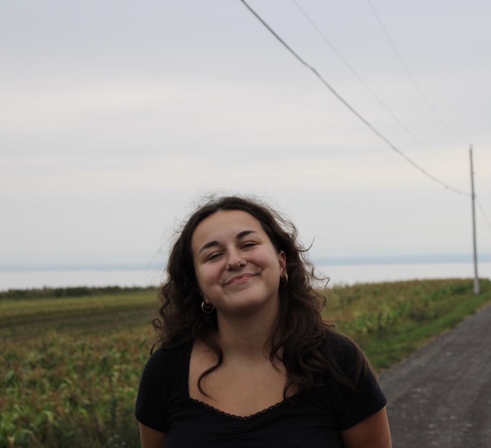
Étudiante à la maîtrise en études internationales
Gestion de projets, recherche et politiques en coopération internationale
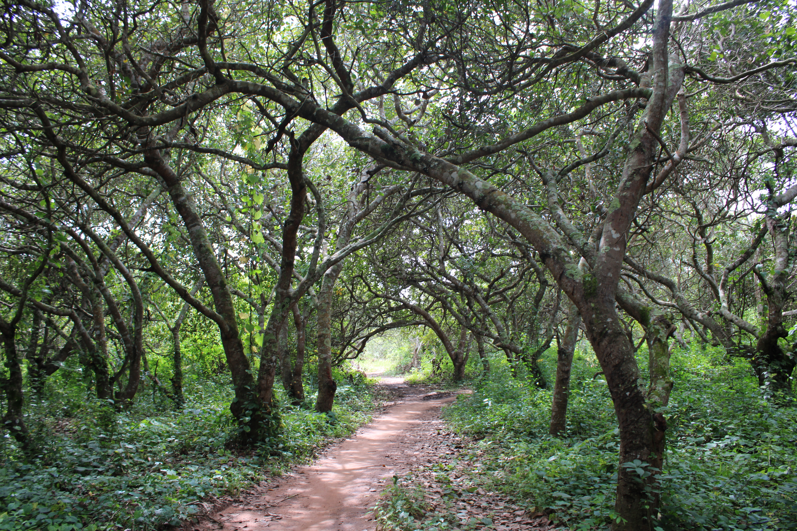
Étudiante en études internationales
Détentrice d'un baccalauréat en études politiques appliquées avec une concentration en coopération internationale de l'Université de Sherbrooke, je poursuis actuellement une maîtrise professionnelle en études internationales à l'Université Laval. Je m'intéresse autant à la gestion de projets en coopération internationale qu'à la recherche et à l'analyse de politiques, avec une attention particulière pour la sécurité alimentaire et l'agroécologie. Je suis à la recherche d'un emploi dans ces domaines. Sur ce site, vous trouverez mes projets, mon parcours et mes coordonnées.
Voici une sélection des projets présents ou passés que j'ai réalisés dans le cadre ou en parallèle de mes études.
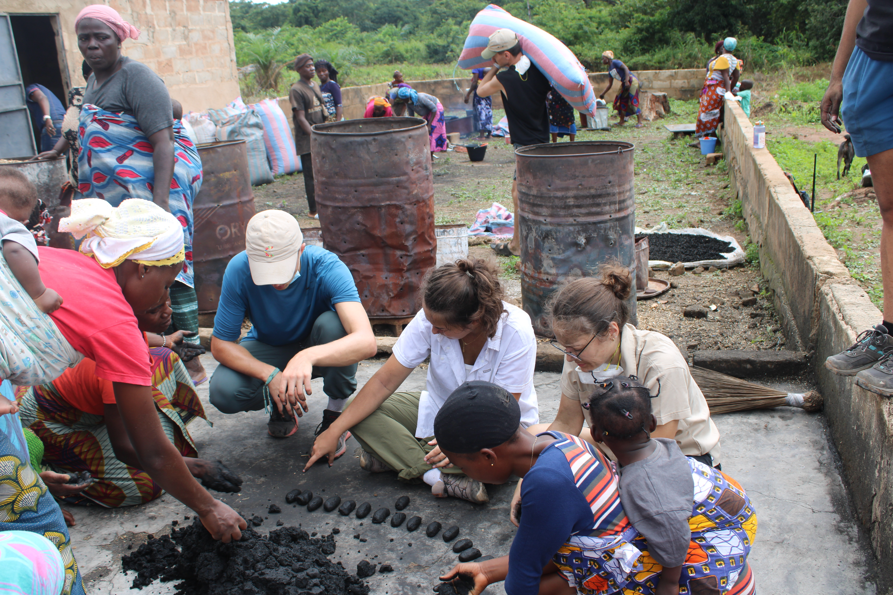
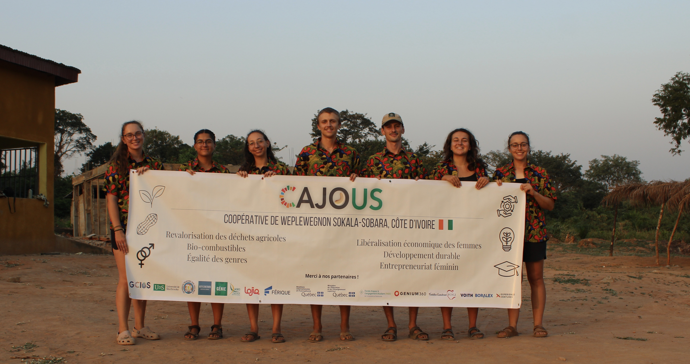
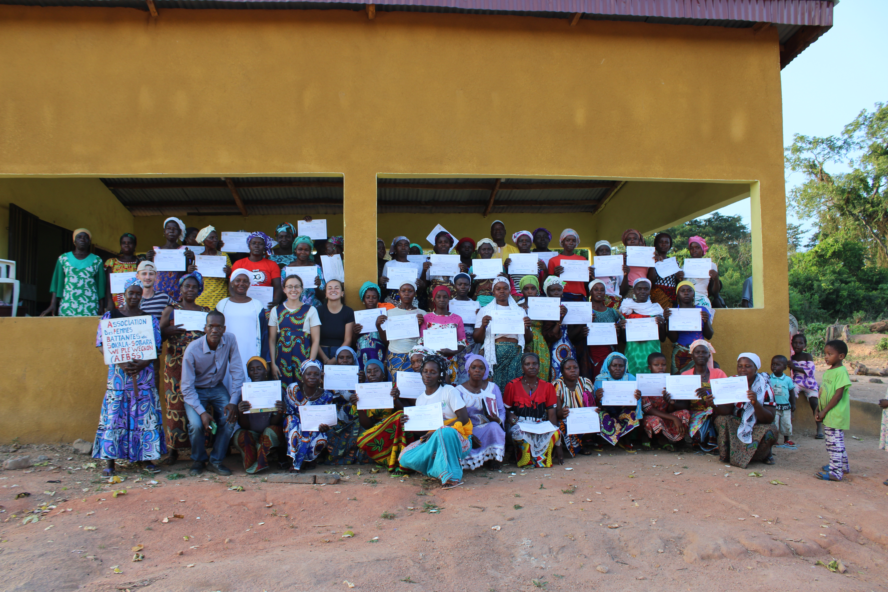
Voici les compétences que j'ai développées au cours de mes études, de mes stages et de mes implications en coopération internationale.
Quelques images d'éléments qui me représentent en dehors de la sphère professionnelle!
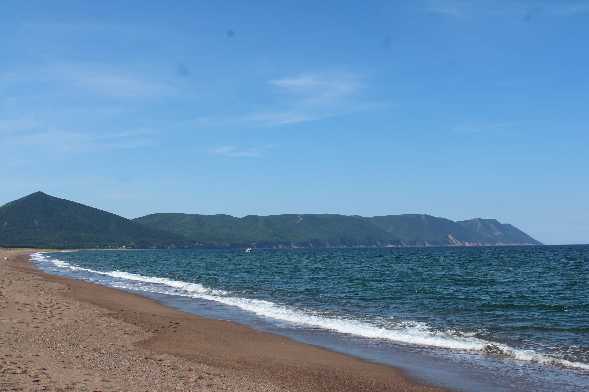
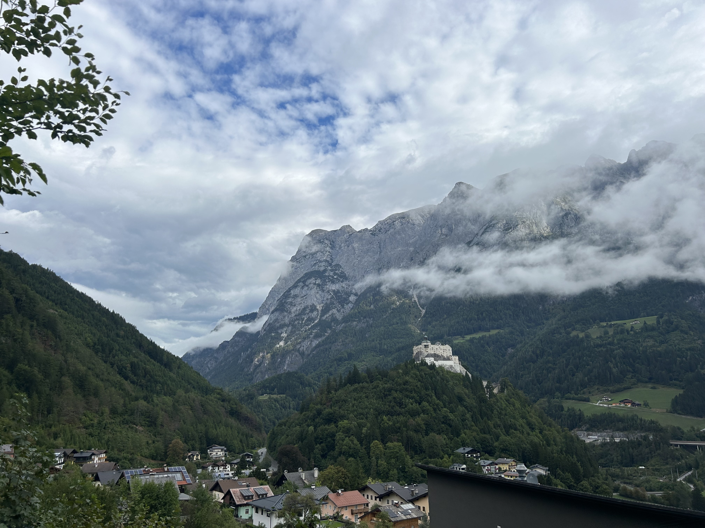
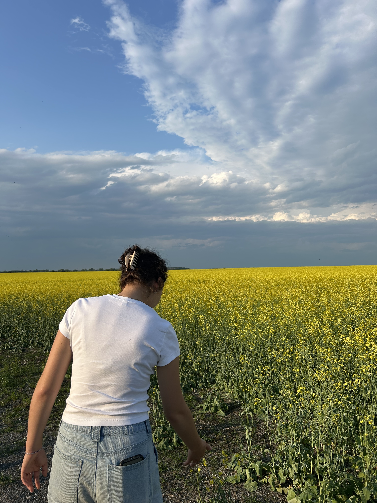
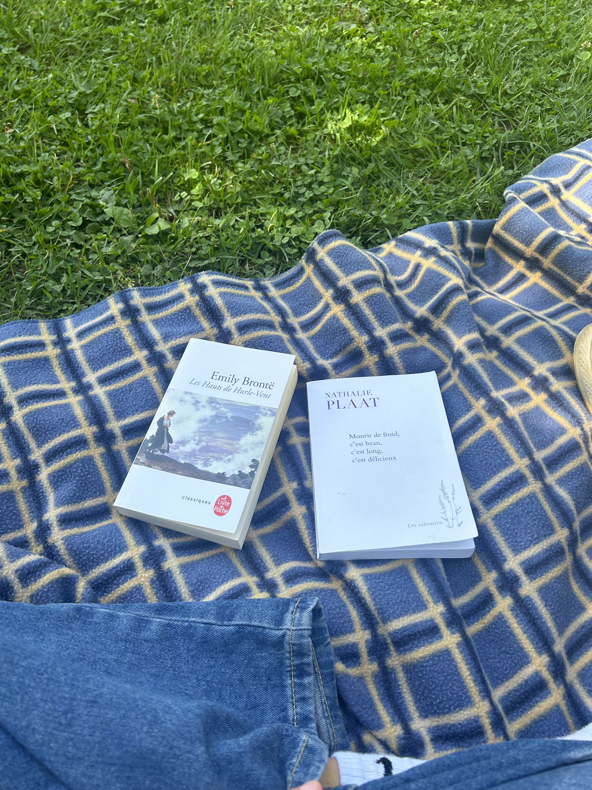
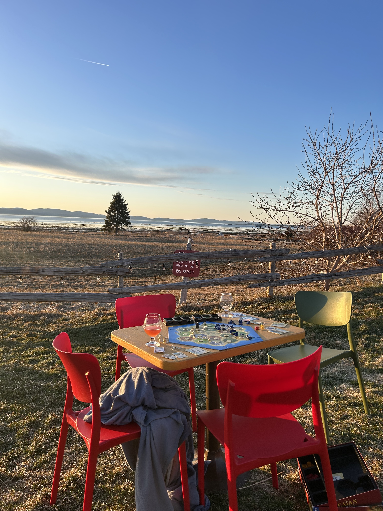
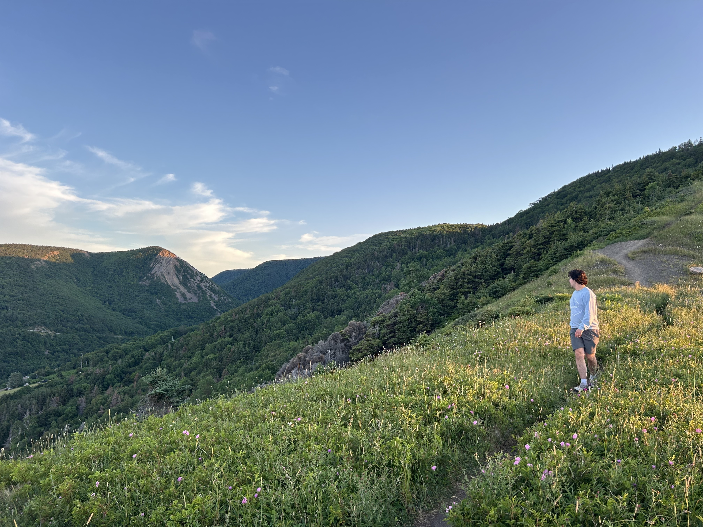
Je serais heureuse d'échanger avec vous au sujet d'occasions d'emploi, de projets ou de collaborations pour tout ce qui touche la coopération internationale, l'environnement, l'agroécologie et la sécurité alimentaire!